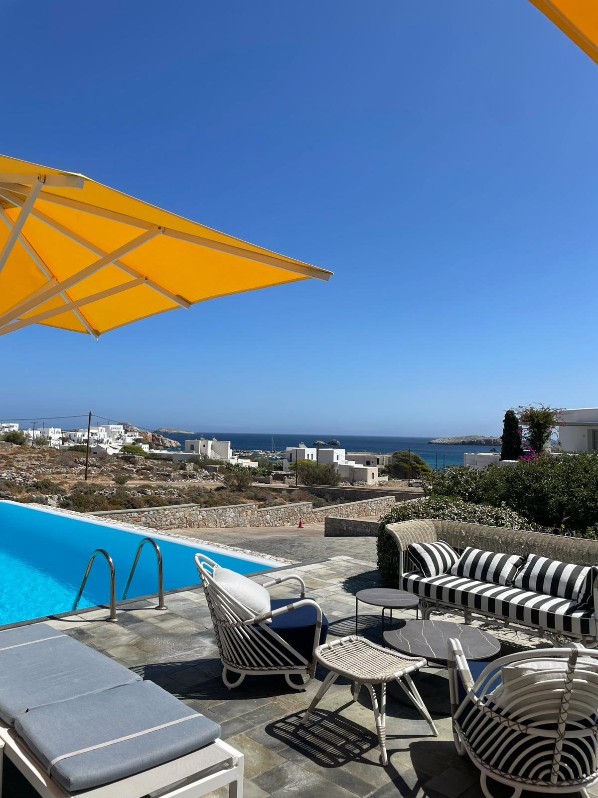
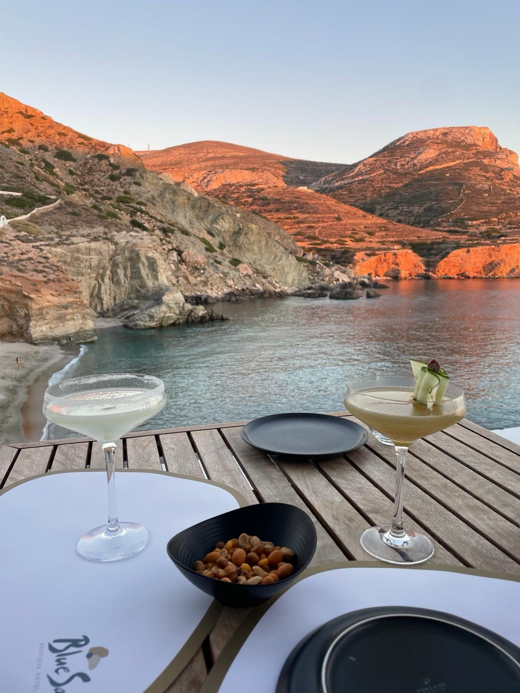

01 / Getting to know the islandThe Cyclades, Greece
Chora at
the centre.
One hour on the ferry from popular Santorini, a little gem of a Greek island, Folegandros.
Chora Town is at the centre with colourful doorways, Athenian boutiques, and a scenic hilltop church.


02 / Our favouritesKanella loves
Keep these
on your list.
- 01
Anemomilos Hotel
- 02
Blue Sands Hotel
- 03
Akali Beach
- 04
Sinadisi Restaurant
- 05
Malama Boutique



Family run / Greek Cypriot roots
A Greek twist,
back in Dulwich.
Our family story continues at Kanella. Find us at 106 Lordship Lane, East Dulwich, SE22 8HF.